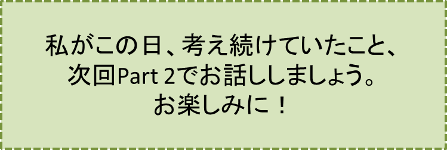

2センチの隙間-PART1-
『車内にて』の巻
笠原正雄
「舞奈電鉄舞駅」始発の「奈和中央」行特急電車に乗り込むと、いつものことですが私は、真ん中当りの席を目ざとく見付け、窓側の席に座ります。
そして早速に、分厚い専門書を開きます。これまた普段通りのことです。
右手には、売店で買い求めた温っかーいコーヒーが湯気（ゆげ）を立てています。
“私は、奈和市のダウンタウン「奈和中央」にあるIT企業に勤める超エリートのサラリーマン“
という自負、
“さあ今日も全力で仕事に打ち込むぞ”
という気分を、朝のコーヒーがいやが上にも高めてくれます。
車内のシートは殆ど満席の状態。灰色あるいは黒っぽい服装のサラリーマン達で、占拠されています。
新聞を読んだりノートパソコンを操作したりして、発車前の車内は既にオフィスそのものの雰囲気です。
毎朝発車間際になると、他線からの乗り換えのお客さん達が、争うようにして駆け込んできます。
舞市ダウンタウンのビジネス街に、早朝から勤務するオフィス・レディさん達でしょう。それまで重苦しさが漂っていた車内の雰囲気が一変します。
「舞セントラル駅」到着までの数分間、彼女らはまるで同窓会で久しぶりに再会した友人達同士のように、会話の嵐、嵐、嵐です。色んな話に花が咲きます。
笑いこけたり、大げさなゼスチュアをしたり、お互いに身体を軽く叩きあったり、底抜けの明るさ……。
私の目元は、思わずほころびます。
昨夜のコンパの雰囲気をそのまま持ち込んだような明るさが、車内一杯に広がります。まるでBGMのように。
……しかし、そんな喧騒（けんそう）の中で、およそ場違いな女性が1人、じっと私の方を見詰めています。どうしたのでしょう。
静かな森の公園のベンチに座って、物思いにふける女性。そんな印象でしょう。しかし、その視線の先はしっかり私に向けられています。
“どうしたの？私に用件？”
冷静に彼女を見詰めます。
朝の車内を明るくしていたBGMは、まるで海が波音（なみおと）を立てながら、水平線の彼方（かなた）に、去っていくように、静かに消えていきました。かわりに林の中にいるような不思議な静寂が、車内そして私の心を支配します。
このときだったでしょう、私はまるで雷撃に打たれたように、
「あっ」
と、小さく小さく叫びました。
“A子だ！ 間違いない、A子だ”
“どうして！？ どうして！？ どうしてこんな所に？”
大きな驚きのため、私の胸の動悸（どうき）は、太鼓を幾つも打ったように2倍にも3倍にも激しく鳴りました。
女性はにこりともせず、一層食い入るようにして私を直視し続けます。
A子はこの上もなく美しい女性。理性あふれる感性豊かな女性。
いつまでも私の胸に残像のように残り続けるA子が、今まさに私から少し離れたドアの側に、何事もなかったように立っています。
これは夢でしょうか？
いや夢なんかではありません。私の心の中に長く残り続けていたA子が、目の前にまるで何事もなかったように、物静かな雰囲気で姿を見せている。A子に相違ありません。しっかり、現実の出来事です。忘れ得ぬA子が、通勤電車の中に、突然姿を見せているのです。全く予想もしなかったし、夢の中でも想像しなかったことです。
私のそんな驚き、戸惑いの表情を見たためでしょう。女性は口もとをほころばせながら
“お久しぶりね！ お元気だった？”
と言うように、こぼれるような笑顔を私に投げかけてきます。間違いなくA子の笑顔です。
“あぁもう、絶対そうだ。夢なんかではない”
膝の上にあった専門書を素早く鞄にしまい込み、とにかく、今やA子に間違いない女性と一緒に、「舞セントラル駅」で降りようと腰を上げました。
ワクワク、ドキドキ感が胸一杯に広がります。こんな嬉しいことがほかにあるでしょうか。
信じられない程の大きな喜びを感じながら立ち上がった、まさにその瞬間です。
「あっ！」「あっ！」「あっ！」「あっ！」「あぁ……」
と、大きく小さく叫び、眩暈（めまい）のようなものを感じ、全身の力を失ったまま、シートによろめくようにして腰を降ろしました。
“全くの人違いだ。A子ではない。とんだ誤解をしたものだ”
“でも正面からの顔と横顔とが、こんなにも違う人は、今まで見たことなかったなぁ”
ほんの少し余裕を感じたのでしょう。思わず苦笑してしまいました。
ため息をつきながら、A子と、今の今まで信じ込んでいた女性の横顔を、しっかり直視します。
その横顔、人間というよりはアニメに登場するウシとかブタのような横顔と言った方がよいでしょう。私は苦笑し続けました。
特急電車は、オフィス・レディ達の喧騒を乗せたまま、快調に「舞セントラル駅」に向かって走り続けます。車窓に見える線路沿いの沢山の植木の花達が、後ろへ後ろへと流れていきます。
このとき、A子と勘違いしたアニメの動物を思わせる横顔の女性が、ゆっくりと私の方を向きまばたきもせず見詰め直します。ゆっくりゆっくり見詰め直します。
うわっ、という心の底からこみ上げてくる悲鳴を、口に手を当てて押し殺し、ソファーにのけぞって女性に視線をやりました。
全身の血が一滴残らず凍ったように感じたでしょう。A子を思わせた美しい顔は跡形もなく消え失せ、アニメのウシかブタを思わせるような顔が、私を真っすぐに見ているからです！
最早（もはや）静視に絶えず、がくっと前のめりになって膝の上に顔を伏せました。そしてしばらく、顔をしっかり覆い伏せたままにしていました。
電車は、徐々にスピードを落し始めます。
この動きに誘われるように、伏せていた顔をゆっくり上げました。「舞セントラル駅」に近づいたのでしょう、。大きな駅ビルが目に入り始め、列車は更にスピードを落します。
オフィス・レディさん達は、おしゃべりのペースを全く変えることなく、笑ったり肩を大げさにたたき合ったり、最後の明るさを車内に振りまきながらドアの前で、早くも押し合いへし合いです。
沢山のオフィス・レディさん達が、降車の先陣争いをするようにドアの近くに集まります。
争いを避けるように、集団から少し距離をおいて続く女性に、私の目が再び強く引き付けられます。場違いのような感じの品の良い女性が、ドアが開くのを静かに待っているからです。
気品のある笑みを口もとに僅かに浮かべて、まわりの喧騒（けんそう）とは全く対照的な雰囲気で、ドアが開くのを待っている女性、その美しい横顔、この横顔はA子です！ まぎれもなくA子の横顔です！
私にとって片時（かたとき）も忘れることのできない美しい横顔……。
数年前、A子に初めて出会ったときのシーンが脳裏に甦ります。
葉隠れに見えるお日様を眩（まぶ）しげに仰ぎ見ていたその美しい横顔。女神のように崇高な印象、それでいて実の妹のようにいとしい存在、A子。
“やはりA子だ。女性は初めからA子だったのだ。A子に違いない！”
“アニメに登場する動物のような顔、あぁこれは一瞬の夢、幻だったに違いない。女性は初めから正真正銘A子だったのだ”
との強い想いが胸に宿ります。
私は弾かれたように立ち上がり、開いたドアに向かって歩み始めるA子に向って
「A子！」、「A子！」、「A子！」
と、ありったけの声を振り絞って叫びます。
降車を急ぐ女性は、この声に、半分近く閉まりかけたドアに、軽く手を当て、私の方を見ながら
「お兄さん！」、「お兄さん！」、「お兄さん！」
と、大きく大きく何回も叫びます。
そしてその声を残して、ドアに危く挟まれそうになりながら、もはやA子に100パーセント間違いない女性は、プラットフォームに降り立ちます。
私は車窓に跳びつき、しがみつくようにしてA子を追い求めます。しかし、勤務先に急ぐプラットフォーム上の沢山の人達に、飲み込まれたのでしょう。A子の姿は、全く見えなくなってしまいました。
一人取り残されてしまったような孤独感、寂寥（せきりょう）、繰り返し繰り返し胸に迫ります。
もはや専門書を開き直す気持ちは、完全に失せていました。
この朝まるで霧の中をさまよい歩くように、右に傾き左に傾きながら「奈和中央」のオフィスに着いたのでした。
オフィスでは、仕事をしながらも社員食堂での食事の間も、A子のことそして苦しかった浪人時代のことを考え続ける一日となりました。
